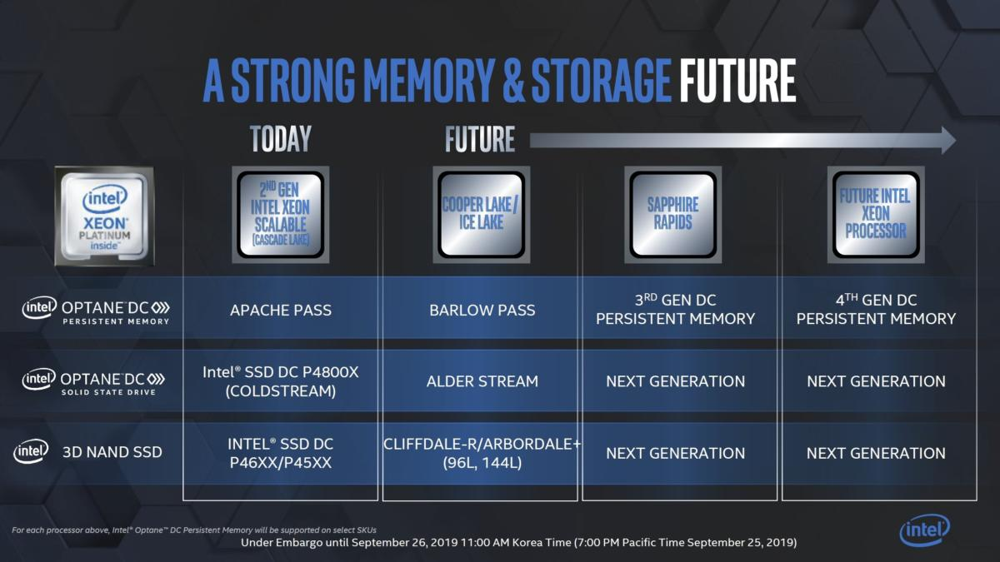

Breaking News
1.Japan agrees to WTO consultation with South Korea amid trade dispute (Japan times 2019-09-20)
Japan has agreed to a consultation with South Korea over Tokyo’s enhanced export control measures, trade minister Isshu Sugawara said Friday, effectively locking both countries into the World Trade Organization’s painstaking dispute settlement process — an undertaking that could potentially take years.
“We’ll make arrangements through diplomatic channels,” Sugawara told reporters on Friday, adding that Japan’s position, that its moves have been consistent with WTO rules, hasn’t changed.
…………
With Tokyo’s reluctant acceptance, the monthslong bilateral dispute has advanced to the global stage — with Seoul apparently hoping the WTO will determine Japan’s actions to have been unfair.
…………
Even at the WTO, however, experts say it is unlikely that the hyperpoliticized trade dispute, entwined with contentious historical issues, will be solved.
2.日韩对立让中国企业渔翁得利 (日本经济新闻中文版 2019-09-25)
…………
目前，日本半导体生产设备企业已经开始“转向中国”。 在中国，设备投资额达到1万亿日元（1日元约合0.009美元）规模的半导体工厂的建设计划相继浮出水面。
对于销售生产设备的企业来说，中国是有潜力的市场。 东京电子 的负责人表示，“以100人为单位让营业负责人到中国长期出差，在各地推进洽谈”。
报道称，中国企业要稳定量产尖端半导体，预计仍需要较长时间。 但是，将来日系零部件厂商无疑也将转向中国。 在液晶面板领域，中国企业的产能已超越韩国企业。 在半导体行业内部，认为“接下来是半导体”（韩国被中国超越）的声音很强烈。
韩国半导体产业协会的常务董事安基铉指出，“如果日韩之间形成壁垒，将对在原材料、设备和最终产品等各领域追求主导权的中国半导体产业有利”。
对于把日本电子产业逼到困境的三星，这次被中国企业吞噬的前景将带有现实意味。 三星占韩国出口的两成、占股票总市值的两成，三星的衰退意味着韩国经济整体的衰退。
3.三星电子在生产线上试用韩国企业加工的氟化氢 (TechWeb 2019-09-06)
9月5日消息，据国外媒体报道，三星电子开始在半导体生产线上试用韩国企业加工的氟化氢。
知情人士称，自8月下旬起，三星电子开始在一条生产线上使用韩国企业供应的氟化氢。氟化氢被用于晶圆的清洗等方面。此次投入量产线的是从中国进口、由韩国企业加工的氟化氢。
在高纯度的氟化氢市场，日本厂商大约占据8至9成份额。三星电子对于是否全面采用日本造以外的氟化氢仍持谨慎态度。
4.Samsung partly switches to South Korean chipmaking material (Nikkei Asian 09-05)
South Korea’s Samsung Electronics has begun using domestically produced hydrogen fluoride in chip production on a trial basis in response to Japanese export curbs, it was learned Wednesday.
The company made the switch on one production line in late August, according to an industry source familiar with the situation. The trial is starting with parts of the fabrication process where the impact on chip quality should be relatively small, likely to see whether the material can be safely introduced elsewhere.
The hydrogen fluoride is imported from China and processed by a domestic company, the source said, though Samsung has not disclosed the specific companies involved. The chemical is used by chipmakers in applications including etching silicon wafers.
…………
While China is the largest supplier of hydrogen fluoride to South Korea, Japan holds a near-monopoly on the ultrapure gas needed for chipmaking, with Stella Chemifa and Morita Chemical Industries controlling nearly 90% of the market between them. Japanese players import lower-quality hydrogen fluoride from China and process it domestically before exporting it to markets such as South Korea.
Market Trends
1.PC DRAM Contract Prices Stabilized in August and Will Likely Remain Steady in September（Trendforce 2019-09-26）
the average contract price of 8GB PC DRAM modules remained constant at US$25.5 in August, showing no noticeable change from the previous month. Negotiations between DRAM suppliers and PC OEMs over the September contracts are still ongoing, but most signs indicate that contract prices of mainstream PC DRAM products will hold steady during the month.
TrendForce’s recent observations of the global DRAM market find that the anxiety over the impact of Japan’s trade actions against South Korea on the supply side has dissipated as the Japanese government has approved shipments of specialty materials to the two major Korean suppliers. However, the dispute between the two countries did heighten the uncertainty about the supply situation for a short while when it escalated in early July. To minimize the risks in their operations, OEMs have opted to raise their inventories of memory components. This, in turn, has helped suppliers in their efforts to lower their inventories to a reasonable level. Furthermore, the stock-up demand was stronger than expected this third quarter due to the seasonal tailwinds and the pulling forward of end product shipments ahead of a possible new round of US tariff increases in December.
…………
2.美光总裁兼CEO： 全球半导体产业扩张势头不会缩减(中国电子报 09-04)
近期，美国半导体行业协会轮值主席、美光科技公司总裁兼CEO桑杰·梅赫罗特拉（Sanjay Mehrotra）表示，随着智能手机、个人电脑和云计算应用等领域的计算技术不断取得突破，人们在生产生活中利用信息的方式被深度优化。特别是在医疗保健、交通技术和数据访问等领域，半导体技术发挥着不可替代的作用，且在产业链中占据着越来越大的份额，成为世界经济的领先部门之一。
半导体占据越来越大份额
在过去的20年中，全球半导体销售业务一直在以接近7%的年复合增长率发展，在2018年达到4690亿美元。如今，中国成为日益重要的半导体市场，2018年占全球半导体销量的1/3。在桑杰·梅赫罗特拉看来，全球半导体行业长期前景十分光明，产业扩张势头不减。这种增长得益于先进的计算性能、更快的连接速度和新应用程序所需的实时数据分析。
半导体产业发展三要素
一是要吸引源源不断的优秀人才加入半导体行业…………
二是要重视知识产权保护。…………
三是要维持政府主导的半导体投资供需平衡。………
3.9月DRAM现货价与合约价价差将缩小 但消化库存仍需2到3季（TechNews科技新报 2019-09-03）
2018年下半年开始的存储器供过于求情况，加上后来的美中与日韩贸易摩擦冲击，使得存储器市场持续走跌的情况，日前似乎有回稳迹象。其中，在现货价之前首先止跌的状态下，厂商一直力图拉抬合约价也同时上涨。
不过，在当前合约价尚未复苏，而且加上市场需求仍不明显的情况下，预计将使得现货价有回复下跌的走势，使得现货价与合约价逐渐缩小价差。至于，整体去库存的情况，则还需要2到3季的时间。
至于，在9月份的合约市场展望上，由于先前市场担忧的原物料供货紧缺因素已经排除。因此，价格走势回到单纯的供需态势。对此，集邦咨询也重申，在原厂目前DRAM库存仍高的情况下，价格易跌难涨，目前最乐观的情境预估是持平开出，而下一次价格跌幅将会在2019年第4季的第1个月份(10月)再现，但不排除在10月以前就会有特殊交易(specialdeals)低于US$25价位。只是，因为这类交易都有特殊的条件(condition)，因此较难列入一般合约价格的采样。
4.张汝京谈中国半导体材料现状 (北仑新闻网 2019-09-16)
近日，芯恩(青岛)集成电路有限公司董事长张汝京博士在谈到中国半导体材料现状时表示，国内光刻胶、特种化学品以及光掩膜版是缺少的。但国产硅片和特种气体发展得很好。
张汝京还指出，国产的抛光液也已经达标了，中国化工实力是相当强的，湿式工艺用化学品也做得很好。韩国被日本卡脖子的氢氟酸中国很早就国产化了，日韩贸易战中韩国还将一些订单转到了中国。
溅射靶材方面，张汝京也认为大陆产品发展得非常好，有一小部分也已经销售到中国台湾大厂。芯片封装材料等其他半导体材料则正在快速追赶。
对于中国而言，张汝京提到了几类未来值得大力发展的半导体材料项目，主要包括半导体厂用石英器件复合材料、晶舟/晶盒、复合材料(砷化镓、氮化镓、氮化硅等)和耗材类(石墨组件、研磨垫)等。
最后，张汝京对中国整个半导体产业提出了三大建议：
一、唯有掌握芯片设计、制造、设备和材料等技术，才有竞争力。……
二、培育人才，突破核心设备、半导体材料和零部件的自主量产能力。……
三、创新协同模式或自有整机大厂，资金合理分配。……
5.中国DRAM该如何突围？ (半导体行业观察 2019-09-19)
2018年，全球DRAM市场规模为1000亿美元，其中三星、SK海力士、美光三大巨头市场占有率超过90%，呈现寡头垄断态势。时值三大DRAM供应商垄断市场多年，价格飙升，居高不下；即使价格波动，比起以前DRAM价格一天崩跌30%，现在一季下不足10%。对系统厂商来说，真可谓天下苦秦久矣。
…………
2016年立项的合肥长鑫已累计投入25亿美元研发费用，并投入巨资建成大陆第一座12英寸DRAM存储器芯片制造厂，技术和产品研发有序开展，并已持续投入晶圆超过15000片，目前其8GB LPDDR4试后，指标符合要求，预计年底量产；福建晋华通过和联电的合作，本已取得了相关技术，但由于和美光的诉讼，遭遇美国禁运，目前处于设备维持运转阶段；紫光集团于2019年6月30日宣布重启组建DRAM事业群，委任刁石京为DRAM事业群董事长，高启全（Charles Kau）为DRAM事业群首席执行官（CEO），并于2019年8月27日和重庆市人民政府签署合作协议，在重庆两江新区发起设立紫光国芯集成电路股份有限公司，建设工厂。
由于高投入、高风险性、长期性和超大规模等行业特点，回顾国际上其他地区的发展历史和经验，发展DRAM存储器产业一定是国家战略。尽管DRAM产业发展之路必将布满荆棘，但不管如何，中国大陆必定要拥有自身的DRAM制造能力。
…………
6.受記憶體市場疲軟及貿易戰影響 半導體產業2019年不如預期 2020有轉機 (北美智權官網 20190925)
在2019 SEMICON Taiwan展前記者會上，曾瑞榆就4個面向，剖析了2019年全球半導體市場趨勢，分別是（1）2019產業趨勢與困境、(2)晶圓廠投資概觀、(3) 12吋晶圓廠概觀、及(4)設備及材料市場。
曾瑞榆分享對2019年半導體市場趨勢的觀察時指出，2019年初至今伴隨記憶體產業的廣泛疲軟，各研究機構都已經下修了對2019年半導體產業的預測，從年初至今的趨勢來看，整體半導體設備投資同比下降20%，而整體晶片銷售同比也下滑14%。需求面部分，高階智慧型手機的成長趨緩，雲端業者的支出力道也不如去年，近期車用以及工業半導體市場也相對減速，再加上貿易以及國際地緣政治的衝突，可預期供應鏈庫存的消化會延續到今年年底，到2020年初水準才會回升。
然而，儘管有多項不確定因素，曾瑞榆也指出，目前仍預期2020年半導體市場將有5％至8％的復甦。在設備投資部分，台灣今明兩年在晶圓代工先進製程以及封裝測試業者先進封測產能的持續投資下，成長動能將高於其他市場，預計今年台灣將重新奪回全球第一大設備市場。至於記憶體部分的投資復甦，預計由NAND Flash在明年上半年開始，DRAM則可能落在明年下半年。
…………
Vendor News
1.解决智能家居用网需求 宏旺半导体DDR助力光猫领域 (ICMAX 宏旺半导体 2019-09-10)
随着生活越来越智能化，存储芯片出现在我们生活中的各个角落，与日常生活紧密相关，从随身携带的手机到家庭用网必不可少的光猫，都离不开存储芯片。随着5G的落地，高速度带来的高转换与高容量，对设备的运行内存将会有更高的要求。
DDR作为应用最广泛的动态随机存取存储器，被应用于各类智能设备中，例如宏旺半导体DDR猫、机顶盒、智能电视等智能家庭设备，产品型号多，容量范围广，工作温度宽泛，能满足不同应用运行需要。
…………
ICMAX DDR因性能优越性价比高，拥有极高竞争力，被众多知名厂商选择，在4K人工智能超清电视领域也有应用。近年来，智能家居市场呈现出欣欣向荣的景象，智能TV、智能音箱等智能家居单品显现出爆发之势，随着5G时代的降临，智能家居行业迎来了一个强有力的助力，对存储芯片的需求将会迎来增长期，ICMAX将做好充分准备。
2.长鑫存储首次公开亮相谈未来技术 (全球半导体观察 2019-09-20 )
昨日，长鑫存储副总裁、未来技术评估实验室负责人平尔萱博士披露了DRAM技术发展现状和未来趋势。作为中国DRAM产业的领导者，长鑫存储正在加速从DRAM的技术追赶者向技术引领者转变，用自主研发的DRAM技术和专利，引领中国实现DRAM零的突破。
…………
“随着数据量的增加，处理数据的能力要加强，因此需要强大的CPU，同时存储器的数据容量也要增强，并且读写速度也要增加。因此近来对DRAM的要求也必须持续提高。DRAM的前景是十分看好”，平尔萱博士强调。IBS首席执行官 Handel Jones日前在上海出席一场技术论坛时也表示，DRAM将于2020年迎来复苏，增长9.87%，这也从侧面印证了平博士的观点。
“由于DRAM制程中有电容这一段，因此HGMG制程的选择需与电容制程匹配。所谓的Gate First制程就可被选择为DRAM逻辑线路CMOS制程”，平博士说。他进一步表示，通过引入HKMG不但可以推动存储密度进一步提高，接口速度也同步获得了提升。
“为了继续发展DRAM技术，我们还需要在新材料、新架构上进行更多探索，并与相关企业进行合作”，平博士说。他最后指出，回顾过去几十年的DRAM发展，证明IDM是发展DRAM的必然选择，而这正是长鑫存储从一开始建立就坚持的。
…………
3.兆易创新拟定增43亿用于DRAM芯片自研及产业化项目 (全球半导体观察 2019-09-24 )
2019年9月19日、9月20日、9月23日，北京兆易创新科技股份有限公司（以下简称“兆易创新”）股票交易连续三个交易日内收盘价格涨幅偏离值累计超过20%，根据《上海证券交易所交易规则》的有关规定，属于股票交易异常波动情形。
对此，兆易创新9月23日发布公告称，经公司自查，公司拟筹划非公开发行股份事项，募集资金总额约43亿元，主要用于公司DRAM芯片自主研发及产业化项目及补充流动资金。本次非公开发行的发行对象为不超过10名特定投资者，发行方式为竞价发行。
公告同时指出，经向公司控股股东及实际控制人朱一明先生书面征询核实：截至公告披露日，公司控股股东、实际控制人不存在影响公司股票交易价格异常波动的重大事宜；控股股东、实际控制人不存在涉及公司应披露而未披露的重大信息，包括但不限于重大资产重组、发行股份、上市公司收购、债务重组、业务重组、资产剥离和资产注入等重大事项。
…………
4.长鑫存储朱一明加入全球半导体联盟董事会 (半导体行业观察 2019-09-18 )
全球半导体联盟（Global Semiconductor Alliance）9月17日宣布，任命长鑫存储技术有限公司董事长兼首席执行官朱一明为联盟董事会成员。
全球半导体联盟在全球拥有来自超过25个国家和地区的250多家企业会员，代表着产值4500亿美元的半导体产业中70%的力量，涵盖了从初创公司到行业巨头的公共和私营企业，其中100家为上市公司。联盟领导层由半导体及相关高科技行业的技术和商业领袖组成，其董事会成员包括来自英特尔、三星、超微半导体（AMD）、安谋科技（ARM）、高通、应用材料等全球半导体巨头的高级负责人。此前，中芯国际联席首席执行官赵海军是董事会内唯一代表中国大陆半导体企业的成员。
朱一明在写给全球半导体联盟总裁Jodi Shelton女士的答谢函中表示，感谢行业和联盟对长鑫存储的认可。公司成立三年来，以国际合作为基础，开展创新和自主研发，产品设计和制造等各项工作按照既定目标稳步前进；未来将继续务实发展，交付成果，并在全球半导体生态圈努力促进国际合作。
5.Tsinghua Unigroup’s DRAM Fab Is Scheduled for Completion in 2021 but Technology Remains the Biggest Challenge to Production(TrendForce 2019-09-05)
TsinghuaUnigroup announced on August 27 that it has signed an agreement with the Chongqing government to establish an R&D center and a wafer fab for DRAM production. The construction of these facilities, which will be located in Chongqing’s Liangjiang New Area, is scheduled to start near the end of 2019 and finish in 2021. TrendForce believes this latest event is another indication of China’s unwavering determination to achieve self-sufficiency in the supply of memory products. ***The continuing escalation of the US-China trade dispute and the blacklisting of JHICC by the US government have compelled the Chinese government to redouble their efforts to build up a domestic DRAM industry…………
According to TrendForce’s current assessment, the first major challenge that the DRAM business unit will face is the development of the process technology. Unlike JHICC and CXMT, Tsinghua Unigroup does not have an outside partner that can provide the crucial expertise.
…………
6.Chinese firm begins mass production of first homegrown DRAM chip (TechNode 2019-09-23 )
A Chinese state-backed semiconductor startup said it has started mass production of the country’s first locally designed dynamic random-access memory (DRAM) chip, China Securities Journal reported on Monday.
Why it matters: The move marks a major step for China’s push for complete self-reliance in semiconductors amid an ongoing trade war with the United States, but experts are skeptical about whether homegrown players can challenge memory chip giants such as Samsung and Micron in the $100 billion-per-year market.
7.实现两项重大突破 集成电路产业迎来广阔发展空间 (证券时报网 2019-09-23)
在9月20日-23日安徽合肥举行的2019世界制造业大会上，长鑫存储宣布DRAM生产线投产。这标志着我国在内存芯片领域取得重大突破。合肥将依托长鑫存储引进芯片设计、封装测试、装备材料、智能终端类项目，打造空港集成电路配套产业园。
多位与会专家表示，集成电路产业是支撑经济社会发展和保障国家安全的战略性、基础性和先导性产业。随着5G、人工智能、物联网、大数据、云计算等领域技术逐步成熟，我国集成电路产业将迎来广阔发展空间。目前中国集成电路产业“三业”（封测、设计、制造）占比趋近合理，向3∶4∶3的黄金比例调整。预计未来三年我国集成电路市场仍将保持稳定增长。
据报道，9月20日在安徽合肥召开的2019世界制造业大会上，总投资约1500亿元的长鑫存储内存芯片DRAM自主制造项目宣布投产，其与国际主流DRAM产品同步的10nm级第一代8Gb DDR4首度亮相。就在9月2日，紫光集团旗下长江存储宣布已开始量产基于Xtacking架构的中国首款64层3D NAND闪存，以满足固态硬盘、嵌入式存储等主流市场应用需求。
…………
8.美光科技第四季度净利润同比大幅下降 (腾讯证券 2019-09-27)
美光科技在美股市场周四收盘后（北京时间周五凌晨）发布了该公司的2019财年第四季度及全年财报。*报告显示，美光科技第四季度营收为**48.70**亿美元，相比之下去年同期为**84.40**亿美元，上一季度为**47.88**亿美元；净利润为**5.61**亿美元，相比之下去年同期为**43.25**亿美元，上一季度为**8.40**亿美元；每股摊薄收益为**0.49**美元，相比之下上年同期为**3.56**美元，上一季度为**0.74**美元*。**
财报发布后，美光科技盘后股价下跌5.80%，报45.78美元/股，原因是该公司对2020财年第一季度调整后每股收益的展望未达华尔街分析师预期。
…………
9.美光2020年会计年度Q1展望保守 (台湾中时电子报 2019-09-29)
美国商务部将华为列入禁止出口实体清单中，美光虽然将不受限制的产品对华为出货，但总体来看，华为禁令已对美光营运造成负面影响，加上美光表示未来几季对华为的出货恐持续下滑，也导致美光对2020年会计年度第一季展望低于预期。在营运展望保守下，美光股价上周五大跌近7%，连带影响南亚科、华邦电、威刚、群联等存储器族群股价纷纷走跌。
虽然近期DRAM及NAND Flash价格止跌，但市场库存仍高，美光预期2020年会计年度第一季9～11月）营收可望回升至50亿美元，但毛利率将进一步下滑，导致获利预估低于市场预期。再者，美光预期华为若持续名列实体清单，美光又无法获得商务部许可，会造成对华为的出货逐季下滑，影响营运。
再者，美光对明年存储器市场景气看法，市场法人及分析师均趋于保守，所以才会明显降低资本支出。尤其美光对NAND Flash市场展望保守2020年的供给位元年成长率将明显低于产业平均水平，并将以现有库存因应客户需求，法人解读美光恐持续减产，也暗示市场库存水位仍居高不下。
…………
法人表示，台湾存储器厂如南亚科、华邦电等多数产品线，基本上都可符合法令规定持续出货给华为，对下半年营运有明显加分效果。
10.Intel confirms its 14nm production is a “challenging supply-demand environment” (PCGames 2019-09-26)
Reports are coming in that Intel is once more struggling to cope with the amount of 14nm chips it needs to fill demand for all its desktop, mobile, server, and chipset silicon across almost the entirety of its range.
And from the company’s response it looks like it’s now been confirmed. But hey, at least it doesn’t seem to have capacity issues for its 10nm Ice Lake CPUs, last time I checked the production lines in Israel it looked pretty chill…
…………
In a response to Anandtech Intel has provided the following statement.
“We continue working to improve the supply-demand balance for our PC customers. In the first half of 2019, we saw PC customer demand that exceeded our expectations and surpassed third-party forecasts. We have added 14nm output capacity and are ramping volume on 10nm with systems on shelf for holiday.
“While our output capacity is increasing, we remain in a challenging supply-demand environment in our PC-centric business. We are actively working to address this challenge, and we continue to prioritize available output towards the newest generation Intel Core i5, i7 and i9 products that support our customers’ high-growth segments.”
New Technology
1.芝奇内存突破DDR4 6016MHz超频世界纪录 (全球半导体观察 2019-09-11)
9月10日，世界知名超频内存及高端电竞外围领导品牌，芝奇国际宣布再度突破内存超频世界纪录，以DDR4-6016MHz 的惊人速度，成为全球最快超频内存速度纪录保持者。由来自微星团队的专业超频好手Toppc，使用芝奇皇家戟高阶内存，并搭载 MSI MPG Z390I GAMING EDGE AC 主板与Intel® Core™ i9-9900K处理器，充份展现芝奇内存与新世代平台的超频极限。
专业超频好手Toppc已连续多年于Computex期间，在芝奇展位上现场突破内存超频世界纪录，也是当年率先全球好手突破DDR4-5000MHz瓶颈的传奇人物，今天，他再次缔造全新超频世界纪录的里程碑，速度达到了令人难以置信的DDR4-6016MHz惊人成绩。此一壮举使用了液态氮极限超频技术，并搭配MSI MPG Z390I GAMING EDGE AC主板与Intel® Core™ i9-9900K，再次展现各项硬件配备强悍的超频潜力。
2.Intel maps out Optane’s future and says Penta Level Cell NAND is in the works(PCWorld 09-25)
In a massive storage data dump, Intel laid out its Optane roadmap and claimed an edge in Penta Level Cell NAND technology. That’s not even mentioning the company’s plans for fatter SSDs, and how long it’ll take to get persistent memory to consumer PCs.

The announcements were made Thursday morning at a storage event in Seoul, South Korea, where Intel showed off some new technology coming down the pike. Intel also announced that, after the very public and amicable divorce from Micron, it’s moving its Optane development to Rancho Rio, New Mexico………
Intel said it’s moving ahead with plans for five-bits-per-cell NAND***, or Penta-Level Cell (PLC). As the name implies, five bits means five possible values for each cell, compared to the original Single Level Cell’s single bit or Quad Level Cell’s four bits per cell.